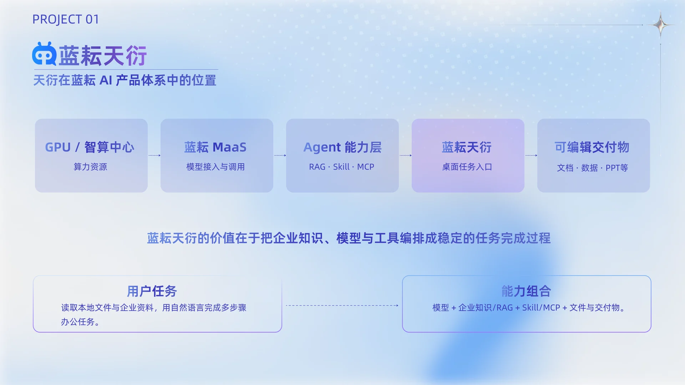
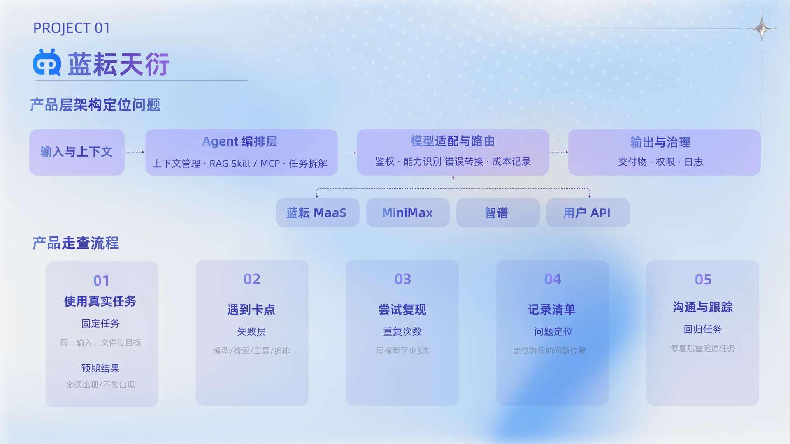
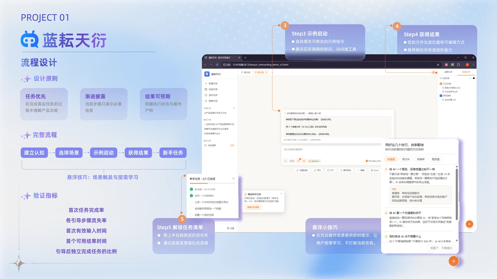
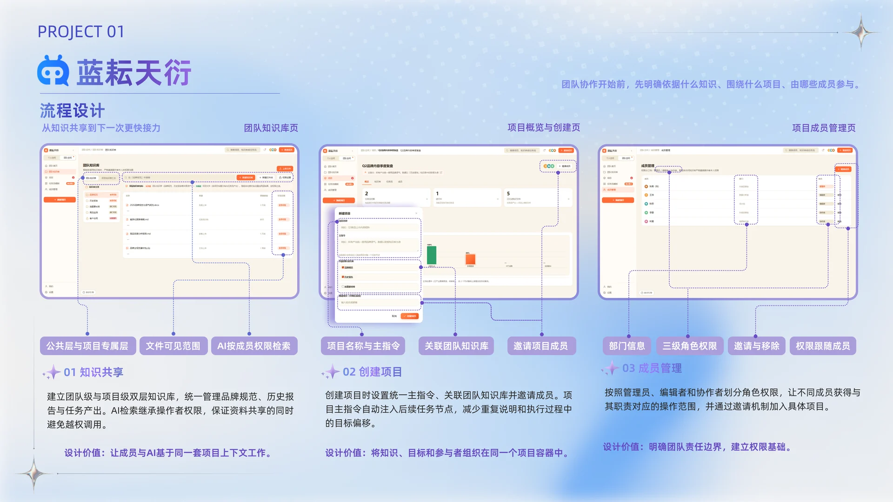
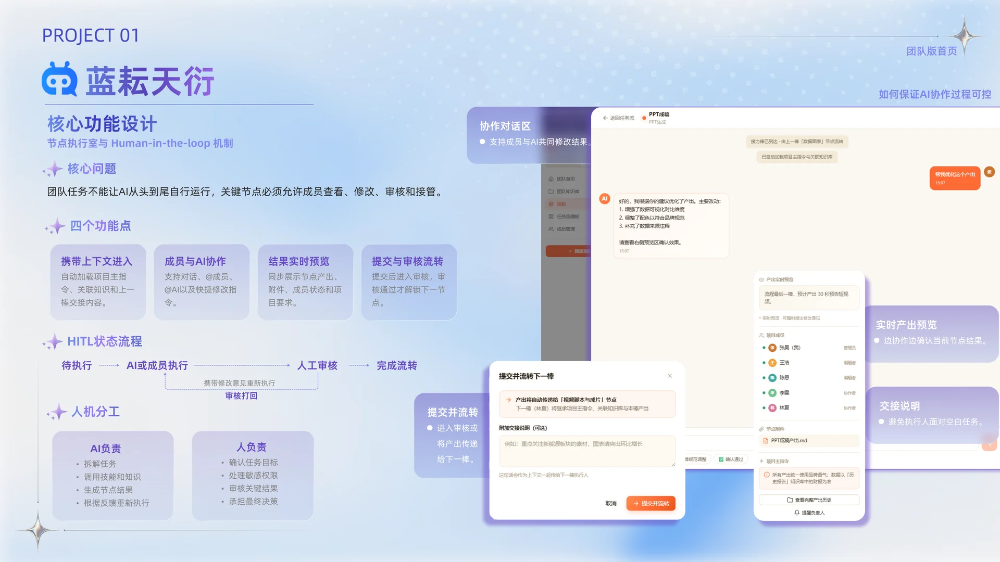

目标与上下文
用户说明任务，并授权文件、知识与工具。
用户说明任务，并授权文件、知识与工具。
系统调用模型、知识库、Skill 或 MCP 完成步骤。
结果不止是回答，而是可预览、修改和复用的产物。

产品定位：企业级桌面智能体，以本地与云端能力协同完成任务。

工作记录：27 条需求与 34 条 Bug，覆盖任务执行、文件处理与交互反馈。
从实际管理表中选取代表条目，保留原始优先级与状态。可以搜索、筛选，并展开查看记录内容。

用写作、分析、PPT 等任务场景替代功能名词堆叠。
预填可编辑指令，并展示将调用的知识与工具。
新手任务清单与悬浮技巧按场景出现，不打断主任务。
选择与你的工作有关的场景，从一条示例指令开始。体验引导如何逐步交还操作主动权。


团队知识库和项目资料统一管理，AI 继承可用上下文。
节点可分配给成员或 AI，并保留角色与权限边界。
关键结果需要查看、修改与审核后才能流转和归档。
以团队内容任务为例，体验节点协作、交接说明、提交审核与退回修改，查看知识如何随任务流转。
一条完整任务链更容易暴露上下文断裂、状态不清与结果不可控的问题。
先判断输入、编排、检索和交互是否可靠，再讨论模型能力与评测。
记录环境、输入、预期与实际结果，并在修复后进行同场景复测。